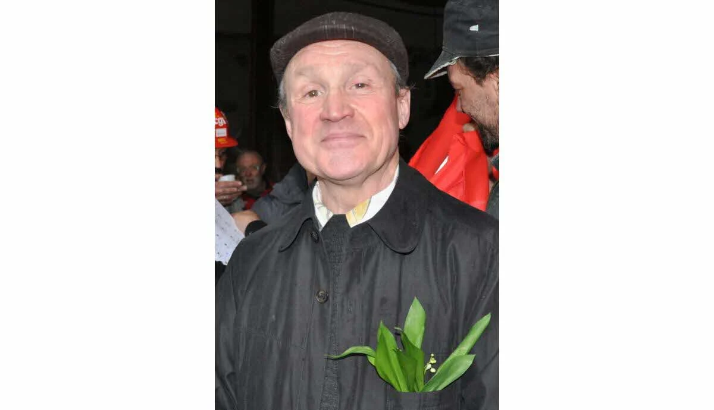

Hommage du PCF 79
Nous rendons hommage à notre camarade Jean François Christé
Date indiquée par Facebook · 22 juillet 2024
Repères éditoriaux
Nous avons annoncé le décès de notre camarade Jean François Christé, dit Jeff. Membre de la section de Thouars et du comité départemental, il avait auparavant milité dans le Charolais-Brionnais. Notre hommage rappelle son engagement et sa défense des logiciels libres.
Texte conservé avec la publication
C'est avec une grande tristesse que nous avons appris le décès brutal de notre camarade Jean François CHRISTÉ, adhérent de la section de Thouars et membre du Comité Départemental de la Fédération du Parti Communiste Français des Deux-Sèvres. Il était arrivé dans notre département en 2022 après avoir été un militant très actif de la section du Charolais Brionnais de 2014 à 2022, et s'être très investi dans la réorganisation de la fédération de SAONE ET LOIRE durant cette période.
Militant infatigable , organisateur, expert en informatique et promoteur de l'utilisation des logiciels libres, notre camarade Jean François CHRISTÉ dit JEFF s'est éteint brutalement à 75 ans.
Les obsèques se tiendront au Crématorium de Bressuire (79300)
7 rue de la clairière le Mercredi 24 juillet à 12h00.

Sources
Archive rouge · export Facebook · AR-0002-FB-01314
À lire aussi · Bonne année 2026 de la part du PCF des Deux-Sèvres